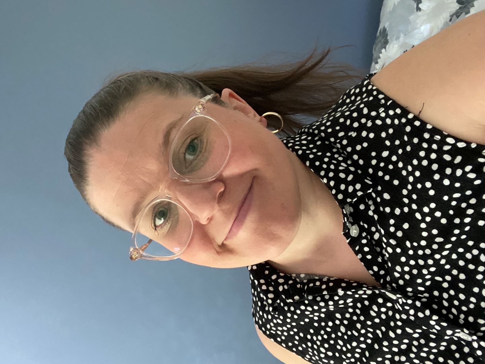
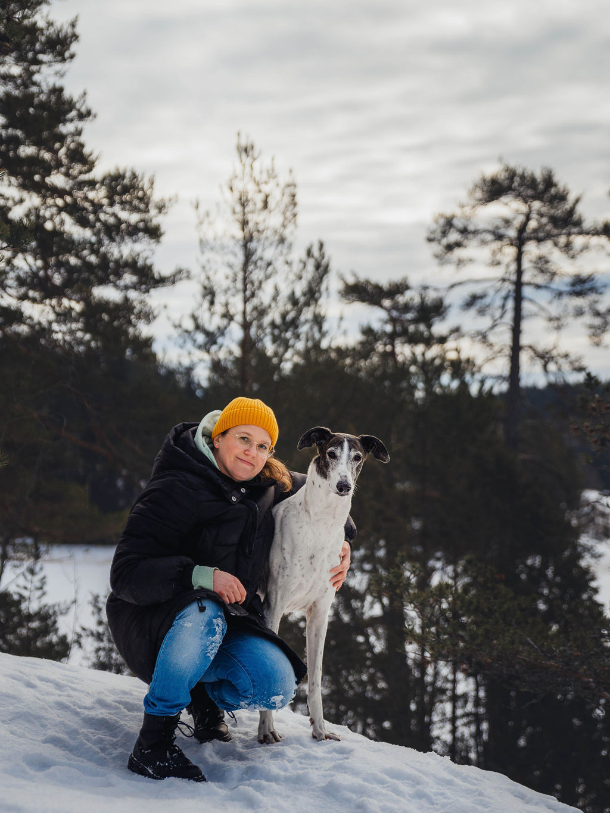
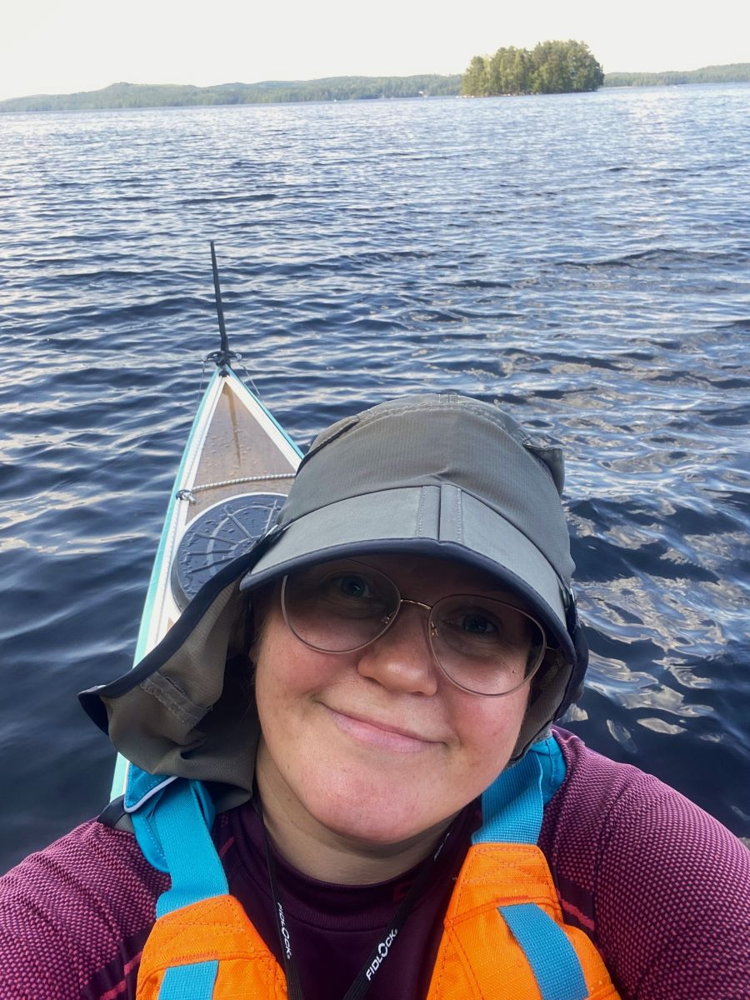

Olen Janica Ström 41-vuotias asiakaspalvelun ammattilainen. Asun perheen ja kahden koiran kanssa maaseudun rauhassa Pukkilassa itä-Uudellamaalla.
Yli 20 vuoden kokemus ravintolatyöstä on luonut minulle vankan osaamisen asiakaspalvelusta sekä työskentelystä paineen alla. Iloinen ja ystävällinen asiakaspalvelu on yksi vahvuuksistani ja nautin siitä, että saan tuoda huononakin päivänä hymyn asiakkaan kasvoille. Olen työskennellyt esimiehenä lähes koko työurani ajan samassa yrityksessä. Olen toiminut vuoro- ja ravintolapäällikkönä, ollen vastuussa henkilökunnasta ja koko ravintolan tuloksellisesta toiminnasta.
Hankalissa tilanteissa minulla ei mene sormi suuhun, vaan etsin tietoa ja pyydän apua, jotta ongelma saadaan ratkaistua. Rakastan työskennellä kiireessä ja koen olevani parhaimmillani juuri näissä tilanteissa. Työskentelen ripeästi ja olen saanut asiakkailta paljon positiivista palautetta tehokkuudestani. Tiimiä johdan toimien itse esimerkkinä ja iloinen ja huumorintajuinen meininki on minulle tärkeää. Nautin, kun saan haasteellisissa ja kiireisissä tilanteissa ohjata ja johtaa tiimiäni. Vuosien saatossa olen kokenut äärimmäisen monta haasteellista asiaa ravintolassa ja joutunut ratkaisemaan monia kiperiä tilanteita.
Olen ollut mukana avaamassa täysin uutta ravintolaa ja mm. rekrytoinut koko ravintolan henkilökunnan ja suunnitellut ja organisoinut heidän perehdytyksensä eri pääkaupunkiseudun ravintoloihin. Henkilöstöasioiden hoitaminen ja vuorolistojen tekeminen on minulle tuttua puuhaa. Olen tarkka ja tilausten teko on yksi mielekkäimmistä työtehtävistä ravintolassa. Erilaiset toimistotyöt ovat kuuluneet työpäiviini koko esimiesurani ajan. Olen kokenut reklamaatioihin vastaaja ja pystyn rauhallisesti ja ystävällisesti hoitamaan haastavatkin asiakastilanteet.
Kielet ovat vahvuuteni ja nautin, kun saan palvella asiakkaita eri kielellä. Työssäni Porvoossa olen päivittäin palvellut asiakkaita ruotsiksi. Englanti on vieraista kielistä minulle vahvin. Olen muutamia kertoja saanut asiakastilanteet hoidettua myös saksaksi. Uskallan rohkeasti käyttää eri kieliä pelkäämättä epäonnistumista. Tulevaisuuden haaveeni olisi työskennellä yrityksessä, jossa saan käyttää kielitaitoani päivittäin.
Olen koulutukseltani ylioppilas ja suorittanut lähiesimiestoiminnan ammattitutkinnon Helsinki Business Collegessa. Ammattitutkinnon suorittaminen on antanut hyviä työkaluja esimiestyöhön. Tammikuussa 2024 aloitin opinnot Haaga-Helia ammattikorkeakoulussa. Suunnitelmani on valmistua tietojenkäsittely tradenomiksi vuoden 2027 aikana. Opiskelen monimuotona ja itsenäinen työskentely sekä itsensä johtaminen ovat oleellisessa asemassa etänä opiskellessa. Opiskelijana olen motivoitunut ja on ollut todella mielenkiintoista hypätä täysin erilaiseen maailmaan ravintolatyöskentelyn jälkeen. Nämä nettisivut ovat yksi koulutehtävistäni ja olen koodannut nämä alusta saakka itse.
Vapaa-ajalla rentoudun ja palaudun parhaiten luonnossa. Rakastan liikkua metsässä ja veden äärellä tai nautiskella luonnosta ihan vain omalla pihalla lammen ääressä. Olen parhaillaan lintuharrastuksen perusteet -kurssilla ja linnut ovat yksi kiinnostuksenkohteistani. Nautin kirjojen lukemisesta, palapelien tekemisestä ja minua kiinnostaa puutarhanhoito. Myös koirat ovat tärkeä osa elämääni ja aiemmin olen ollut aktiivinen niin eri harrastuksissa kuin yhdistystoiminnassakin. Pidän myös tanssimisesta ja rakastan laulaa biisien mukana.